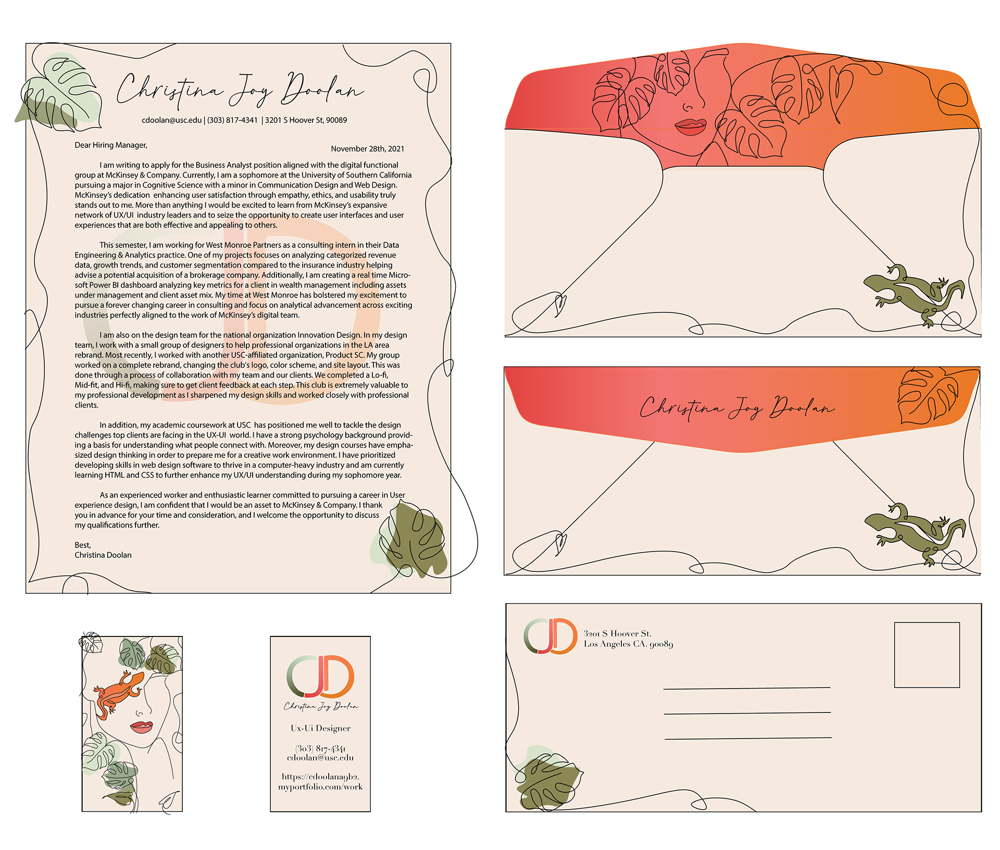

For my final project, I will be coding a portfolio website that will provide a comprehensive and intuitive platform for showcasing my significant achievements and projects from my college experience. This site will serve as a digital testament to my academic journey and the development of my professional skills.
The website will cater to professionals working in web development, front-end and back-end development, and user interface (UI) and user experience (UX) design. It will be used as a component of resume used when applyiing for internships and future jobs.
The website's style will be characterized by a simplistic and feminine design, enriched with interactive and playful elements.
The style will match the style of my personal branding seen below
